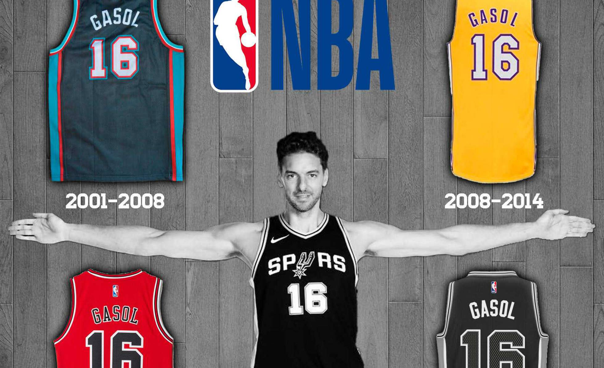

Internacional |
|---|
EEUU
El 'Trumpismo'devora al ala tradicional de los republicanos
 El presidente de Estados Unidos,Donald Trump, comparece ante los periodistas al salir del despacho Oval de la Casa Blanca Leer mas
El presidente de Estados Unidos,Donald Trump, comparece ante los periodistas al salir del despacho Oval de la Casa Blanca Leer mas
|
UE
Bankia gana 739 millones hasta septiembre, un 1% más, por el descenso de las dotaciones
 La tasa de morosidad cayó al 8,8%, mientras que la tasa de cobertura se situó en el 53,8% Leer mas
La tasa de morosidad cayó al 8,8%, mientras que la tasa de cobertura se situó en el 53,8% Leer mas
|
Política |
|---|
España
El Gobierno retomará la negociación de los Presupuestos con el PNV tras el 155 'blando'
El presidente Mariano Rajoi compareciendo tras la puesta en alta del a.155. Leer mas
|
España/Bélgica
¿Puede conceder asilo Bélgica a Puigdemont?
 Carles Puigdemont durante su última comparecencia Leer mas
Carles Puigdemont durante su última comparecencia Leer mas
|
Vigo |
|---|
Sequia
Vigo ahorró en una semana 10 millones de litros de agua tras suprimir riegos y baldeos
 Dos vecinas recogen agua en una de las fuentes públicas de la parroquia de bembrive Leer mas
Dos vecinas recogen agua en una de las fuentes públicas de la parroquia de bembrive Leer mas
|
Llueve
Paraguas fuera: vuelve la lluvia a Galicia
 Vigo amanece con precipitaciones débiles en medio de los recortes en el suministro - Los chubascos serán más intensos a partir del mediodía Leer mas
Vigo amanece con precipitaciones débiles en medio de los recortes en el suministro - Los chubascos serán más intensos a partir del mediodía Leer mas
|
Deportes |
|---|
NBA
Pau Gasol, el 16 cumple 16 años superando retos en la NBA

Pau Gasol junto a sus equipaciones dentro de la NBA Leer mas
|
Mushing
Dopaje en los perros de las carreras de trineos: "Es una salvajada"
 Ejercicios de mushing en el puerto de La Morcuera. Leer mas
Ejercicios de mushing en el puerto de La Morcuera. Leer mas
|